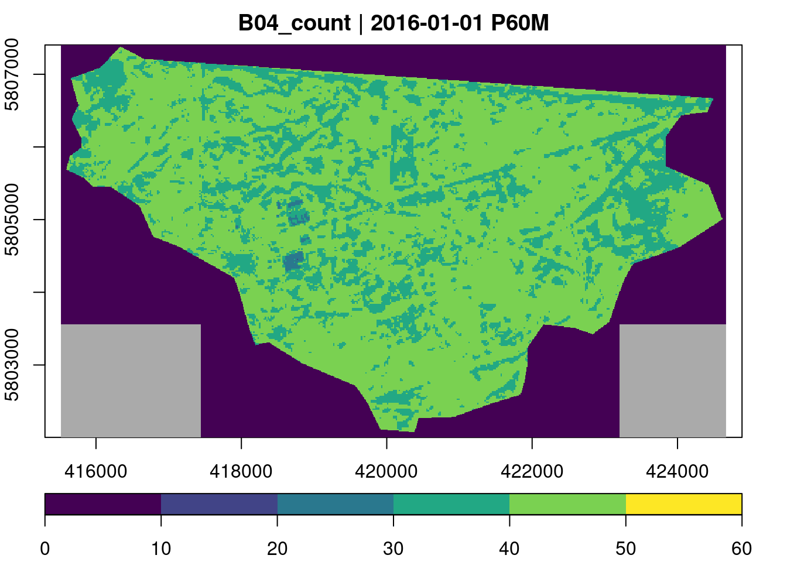

## Linking to GEOS 3.10.2, GDAL 3.4.1, PROJ 8.2.1; sf_use_s2() is TRUE## Breaking News: tmap 3.x is retiring. Please test v4, e.g. with
## remotes::install_github('r-tmap/tmap')## tmap mode set to interactive viewingThis tutorial shows how user-defined functions from external R packages can be applied to data cubes over time. As an example, we will use the bfast R package containing unsupervised change detection methods identifying structural breakpoints in vegetation index time series. Specifically, we will use the bfastmonitor() function to monitor changes on a time series of Sentinel-2 imagery.
We will use Sentinel-2 surface reflectance data from 2016 to 2020 covering a small forested area located southeast of Berlin. The area of interest is available as a polygon in a GeoPackage file gruenheide_forest.gpkg, which is shown in a simple map below.
## Linking to GEOS 3.10.2, GDAL 3.4.1, PROJ 8.2.1; sf_use_s2() is TRUE## Breaking News: tmap 3.x is retiring. Please test v4, e.g. with
## remotes::install_github('r-tmap/tmap')## tmap mode set to interactive viewingInstead of downloading > 100 Sentinel-2 images, we use a cheap machine on Amazon Web Services (AWS) in the Oregon region, where the Sentinel-2 level 2A data are available as cloud-optimized GeoTIFFs (COGs) and explorable via the SpatioTemporal Asset Catalog (STAC) API (see here for more details about the public Sentinel-2 level 2A COG data catalog).
Using the rstac package, we first request all available images from 2016 to 2020 that intersect with our region of interest.
library(rstac)
s = stac("https://earth-search.aws.element84.com/v0")
items <- s |>
stac_search(collections = "sentinel-s2-l2a-cogs",
bbox = c(bbox["xmin"],bbox["ymin"],bbox["xmax"],bbox["ymax"]),
datetime = "2016-01-01/2020-12-31",
limit = 500) |>
post_request()
items## ###STACItemCollection
## - matched feature(s): 457
## - features (457 item(s) / 0 not fetched):
## - S2B_33UVU_20201229_0_L2A
## - S2A_33UVU_20201227_0_L2A
## - S2A_33UVU_20201224_0_L2A
## - S2B_33UVU_20201222_0_L2A
## - S2B_33UVU_20201219_0_L2A
## - S2A_33UVU_20201217_0_L2A
## - S2B_33UVU_20201212_0_L2A
## - S2B_33UVU_20201209_1_L2A
## - S2A_33UVU_20201207_0_L2A
## - S2A_33UVU_20201204_0_L2A
## - ... with 447 more feature(s).
## - assets:
## AOT, B01, B02, B03, B04, B05, B06, B07, B08, B09, B11, B12, B8A, info, metadata, overview, SCL, thumbnail, visual, WVP
## - item's fields:
## assets, bbox, collection, geometry, id, links, properties, properties.sentinel:boa_offset_applied, stac_extensions, stac_version, type# Date and time of first and last images
range(sapply(items$features, function(x) {x$properties$datetime}))## [1] "2016-11-05T10:12:57Z" "2020-12-29T10:16:06Z"It turns out that 457 images intersect with our region of interest while the first available images have been recorded in November, 2016.
To build a regular monthly data cube, we now need to create a gdalcubes image collection from the STAC query result. Notice that to include the SCL band containing per-pixel quality flags (classification as clouds, cloud-shadows, and others), we need to explicitly list the names of the assets. We furthermore ignore images with 50% or more cloud coverage.
library(gdalcubes)
assets = c("B01","B02","B03","B04","B05","B06", "B07","B08","B8A","B09","B11","SCL")
stac_image_collection(items$features, asset_names = assets, property_filter = function(x) {x[["eo:cloud_cover"]] < 50}) -> s2_collection
s2_collection## Image collection object, referencing 200 images with 12 bands
## Images:
## name left top bottom right
## 1 S2A_33UVU_20201107_0_L2A 13.50096 53.24957 52.25346 14.89124
## 2 S2A_33UVU_20201104_0_L2A 13.50096 53.24953 52.25346 15.14626
## 3 S2B_33UVU_20201023_0_L2A 13.50096 53.24958 52.25346 14.90383
## 4 S2B_33UVU_20201003_0_L2A 13.50096 53.24958 52.25346 14.90847
## 5 S2A_33UVU_20200928_0_L2A 13.50096 53.24958 52.25346 14.90143
## 6 S2B_33UVU_20200923_0_L2A 13.50096 53.24958 52.25346 14.91057
## datetime srs
## 1 2020-11-07T10:26:09 EPSG:32633
## 2 2020-11-04T10:16:13 EPSG:32633
## 3 2020-10-23T10:26:08 EPSG:32633
## 4 2020-10-03T10:26:08 EPSG:32633
## 5 2020-09-28T10:26:10 EPSG:32633
## 6 2020-09-23T10:26:07 EPSG:32633
## [ omitted 194 images ]
##
## Bands:
## name offset scale unit nodata image_count
## 1 B01 0 1 200
## 2 B02 0 1 200
## 3 B03 0 1 200
## 4 B04 0 1 200
## 5 B05 0 1 200
## 6 B06 0 1 200
## 7 B07 0 1 200
## 8 B08 0 1 200
## 9 B09 0 1 200
## 10 B11 0 1 200
## 11 B8A 0 1 200
## 12 SCL 0 1 200The result contains 200 images, from which we can now create a data cube. We use the projected bounding box of our polygon as spatial extent, 10 meters spatial resolution, bilinear spatial resampling and derive monthly median values for all pixel values from multiple images within a month, if available. Notice that to make sure that the polygon is completely within our extent, we add 10m to each side of the cube.
st_as_sfc(bbox) |>
st_transform("EPSG:32633") |>
st_bbox() -> bbox_utm
v = cube_view(srs = "EPSG:32633", extent = list(t0 = "2016-01", t1 = "2020-12", left = bbox_utm["xmin"] - 10, right = bbox_utm["xmax"] + 10, bottom = bbox_utm["ymin"] - 10, top = bbox_utm["ymax"] + 10),
dx = 10, dy = 10, dt = "P1M", aggregation = "median", resampling = "bilinear")
v## A data cube view object
##
## Dimensions:
## low high count pixel_size
## t 2016-01-01 2020-12-31 60 P1M
## y 5802003.49436843 5807403.49436843 540 10
## x 415522.739260076 424662.739260076 914 10
##
## SRS: "EPSG:32633"
## Temporal aggregation method: "median"
## Spatial resampling method: "bilinear"Next, we create a data cube, subset the red and near infrared bands and crop by our polygon, which simply sets pixel values outside of the polygon to NA. Afterwards we simply save the data cube as a single netCDF file. Notice that this is not needed but makes debugging to some degree easier.
To get an overview of the data, we first calculate the number of available observations per time series using the built-in count reducer.
gdalcubes_options(parallel = 8)
ncdf_cube("gruenheide_cube_monthly.nc") |>
reduce_time("count(B04)") |>
plot(key.pos = 1, zlim=c(0,60), col = viridis::viridis, nbreaks = 7)
Although our collection contains 200 images with less than 50% cloud coverage, most time series only contain between 40 and 50 valid (non-masked) observations.
We can now use the generic function reduce_time() to apply bfastmonitor() to all kNDVI time series. Notice that there are some fully missing time series and we must carefully catch potential errors, because we do not want a single failing time series to stop all computations. The script below returns computed change dates and magnitudes for all pixel time series and writes the results to a netCDF file.
ncdf_cube("gruenheide_cube_monthly.nc") |>
reduce_time(names = c("change_date", "change_magnitude"), FUN = function(x) {
knr <- exp(-((x["B08",]/10000)-(x["B04",]/10000))^2/(2))
kndvi <- (1-knr) / (1+knr)
if (all(is.na(kndvi))) {
return(c(NA,NA))
}
kndvi_ts = ts(kndvi, start = c(2016, 1), frequency = 12)
library(bfast)
tryCatch({
result = bfastmonitor(kndvi_ts, start = c(2020,1), level = 0.01)
return(c(result$breakpoint, result$magnitude))
}, error = function(x) {
return(c(NA,NA))
})
}) |>
write_ncdf("result.nc", overwrite = TRUE)Running bfastmonitor() is computationally expensive. However, since the data is located in the cloud anyway, it would be obvious to launch one of the more powerful machine instance types with many processors. Parallelization within one instance can be controlled entirely by gdalcubes using gdalcubes_options().
To visualize the change detection results, we load the resulting netCDF file, convert it to a stars object, and finally use the tmap package to create an interactive map to visualize the change date.
## Loading required package: abindThe result certainly needs some postprocessing to understand types of changes and to identify false positives. The larger region in the west of the study area however clearly shows some deforestation due to the construction of Tesla’s Gigafactory Berlin-Brandenburg.
This tutorial has shown how change detection with BFAST can be applied on pixel time series of a data cube as a user-defined function. To avoid downloading a large number of images, the data cube has been created in the cloud, where Sentinel-2 level 2A imagery is already available.
The BFAST family of change detection methods is computationally quite expensive. For processing larger areas and/or longer time series, a more powerful machine would be helpful. However, there are quite a few ongoing developments improving the performance that may find their way to the bfast package on CRAN in the near future.
# Land cover change detection with bfast
```{r}
#| include: false
knitr::opts_chunk$set(comment = "##")
#knitr::opts_chunk$set(echo = TRUE)
#knitr::opts_chunk$set(cache = TRUE)
#knitr::opts_chunk$set(out.width = "65%")
#knitr::opts_chunk$set(fig.align = "center")
```
## Introduction
This tutorial shows how user-defined functions from external R packages can be applied to data cubes over time. As an example, we will use the [`bfast` R package](https://cran.r-project.org/package=bfast) containing unsupervised change detection methods identifying structural breakpoints in vegetation index time series. Specifically, we will use the `bfastmonitor()` function to monitor changes on a time series of Sentinel-2 imagery.
## Data
We will use Sentinel-2 surface reflectance data from 2016 to 2020 covering a small forested area located southeast of Berlin. The area of interest is available as a polygon in a GeoPackage file `gruenheide_forest.gpkg`, which is shown in a simple map below.
```{r}
#| output: hide
library(sf)
geom = read_sf("gruenheide_forest.gpkg")
geom |>
st_bbox() -> bbox
library(tmap)
tmap_mode("view")
tm_shape(st_geometry(geom)) + tm_polygons()
```
## Creating monthly Sentinel-2 time series
Instead of downloading \> 100 Sentinel-2 images, we use a cheap machine on Amazon Web Services (AWS) in the Oregon region, where the Sentinel-2 level 2A data are available as [cloud-optimized GeoTIFFs (COGs)](https://www.cogeo.org) and explorable via the [SpatioTemporal Asset Catalog (STAC)](https://stacspec.org/) API (see [here](https://registry.opendata.aws/sentinel-2-l2a-cogs) for more details about the public Sentinel-2 level 2A COG data catalog).
Using the `rstac` package, we first request all available images from 2016 to 2020 that intersect with our region of interest.
```{r}
library(rstac)
s = stac("https://earth-search.aws.element84.com/v0")
items <- s |>
stac_search(collections = "sentinel-s2-l2a-cogs",
bbox = c(bbox["xmin"],bbox["ymin"],bbox["xmax"],bbox["ymax"]),
datetime = "2016-01-01/2020-12-31",
limit = 500) |>
post_request()
items
# Date and time of first and last images
range(sapply(items$features, function(x) {x$properties$datetime}))
```
It turns out that 457 images intersect with our region of interest while the first available images have been recorded in November, 2016.
To build a regular monthly data cube, we now need to create a gdalcubes image collection from the STAC query result. Notice that to include the `SCL` band containing per-pixel quality flags (classification as clouds, cloud-shadows, and others), we need to explicitly list the names of the assets. We furthermore ignore images with 50% or more cloud coverage.
```{r}
library(gdalcubes)
assets = c("B01","B02","B03","B04","B05","B06", "B07","B08","B8A","B09","B11","SCL")
stac_image_collection(items$features, asset_names = assets, property_filter = function(x) {x[["eo:cloud_cover"]] < 50}) -> s2_collection
s2_collection
```
The result contains 200 images, from which we can now create a data cube. We use the projected bounding box of our polygon as spatial extent, 10 meters spatial resolution, bilinear spatial resampling and derive monthly median values for all pixel values from multiple images within a month, if available. Notice that to make sure that the polygon is completely within our extent, we add 10m to each side of the cube.
```{r}
st_as_sfc(bbox) |>
st_transform("EPSG:32633") |>
st_bbox() -> bbox_utm
v = cube_view(srs = "EPSG:32633", extent = list(t0 = "2016-01", t1 = "2020-12", left = bbox_utm["xmin"] - 10, right = bbox_utm["xmax"] + 10, bottom = bbox_utm["ymin"] - 10, top = bbox_utm["ymax"] + 10),
dx = 10, dy = 10, dt = "P1M", aggregation = "median", resampling = "bilinear")
v
```
Next, we create a data cube, subset the red and near infrared bands and crop by our polygon, which simply sets pixel values outside of the polygon to NA. Afterwards we simply save the data cube as a single netCDF file. Notice that this is not needed but makes debugging to some degree easier.
```{r}
#| include: false
do_download = !file.exists("gruenheide_cube_monthly.nc")
```
```{r, eval=do_download}
s2.mask = image_mask("SCL", values = c(3,8,9))
gdalcubes_options(threads = 8, ncdf_compression_level = 5)
raster_cube(s2_collection, v, mask = s2.mask) |>
select_bands(c("B04","B08")) |>
filter_geom(geom$geometry) |>
write_ncdf("gruenheide_cube_monthly.nc")
```
## Applying bfastmonitor as a user-defined reducer function
To get an overview of the data, we first calculate the number of available observations per time series using the built-in count reducer.
```{r}
gdalcubes_options(parallel = 8)
ncdf_cube("gruenheide_cube_monthly.nc") |>
reduce_time("count(B04)") |>
plot(key.pos = 1, zlim=c(0,60), col = viridis::viridis, nbreaks = 7)
```
Although our collection contains 200 images with less than 50% cloud coverage, most time series only contain between 40 and 50 valid (non-masked) observations.
We can now use the generic function `reduce_time()` to apply `bfastmonitor()` to all [kNDVI](https://advances.sciencemag.org/content/7/9/eabc7447) time series. Notice that there are some fully missing time series and we must carefully catch potential errors, because we do not want a single failing time series to stop all computations. The script below returns computed change dates and magnitudes for all pixel time series and writes the results to a netCDF file.
```{r}
#| include: false
run_bfast = !file.exists("result.nc")
```
```{r, eval=run_bfast}
ncdf_cube("gruenheide_cube_monthly.nc") |>
reduce_time(names = c("change_date", "change_magnitude"), FUN = function(x) {
knr <- exp(-((x["B08",]/10000)-(x["B04",]/10000))^2/(2))
kndvi <- (1-knr) / (1+knr)
if (all(is.na(kndvi))) {
return(c(NA,NA))
}
kndvi_ts = ts(kndvi, start = c(2016, 1), frequency = 12)
library(bfast)
tryCatch({
result = bfastmonitor(kndvi_ts, start = c(2020,1), level = 0.01)
return(c(result$breakpoint, result$magnitude))
}, error = function(x) {
return(c(NA,NA))
})
}) |>
write_ncdf("result.nc", overwrite = TRUE)
```
Running `bfastmonitor()` is computationally expensive. However, since the data is located in the cloud anyway, it would be obvious to launch one of the more powerful machine instance types with many processors. Parallelization within one instance can be controlled entirely by `gdalcubes` using `gdalcubes_options()`.
## Results
To visualize the change detection results, we load the resulting netCDF file, convert it to a `stars` object, and finally use the `tmap` package to create an interactive map to visualize the change date.
```{r}
library(stars)
ncdf_cube("result.nc") |>
st_as_stars() -> x
tm_shape(x["date"]) + tm_raster()
```
The result certainly needs some postprocessing to understand types of changes and to identify false positives. The larger region in the west of the study area however clearly shows some deforestation due to the construction of Tesla's Gigafactory Berlin-Brandenburg.
## Summary
This tutorial has shown how change detection with [BFAST](https://bfast2.github.io) can be applied on pixel time series of a data cube as a user-defined function. To avoid downloading a large number of images, the data cube has been created in the cloud, where Sentinel-2 level 2A imagery is already available.
The BFAST family of change detection methods is computationally quite expensive. For processing larger areas and/or longer time series, a more powerful machine would be helpful. However, there are quite a few ongoing developments improving the performance that may find their way to the bfast package on CRAN in the near future.